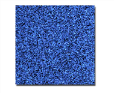
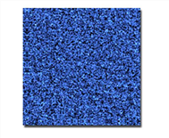
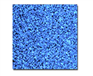
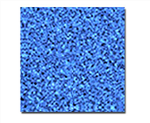

This chapter looks at adding grain to sequences using F_ReGrain.
F_ReGrain is used to add grain to a sequence. It has been designed to sample an area of grain from one image and then to generate unlimited amounts of this grain with exactly the same statistics as the original. This new grain can then be applied to another image.
The figure on the left shows an enlarged and exaggerated sample of grain from Kodak 320 film stock. F_ReGrain was used to sample the original Kodak 320 stock and synthesize a plate of grain. The result is shown in the figure on the right. Note that the grain characteristics closely match the original.
|  |  |
| Kodak 320. | F_ReGrain. |
Similarly, below the figure on the left is a sample from Kodak 500 film stock and the figure on the right shows this replicated using F_ReGrain.
|  |  |
| Kodak 500. | F_ReGrain. |
|
|